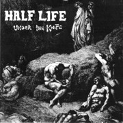

1986—130 decibels can't be wrong

Our search for a drummer lead us to Damon, who was in high
school at the time. His determination was evident, but he had yet to find his
way as a musician. It came to this: we needed a drummer, and he had the energy.
We asked him to join, he accepted, and then Mike cut off his new-wave tail (one
of those bleached-braided affairs so popular in the 80's).
After a few months of practice with Damon, we emerged in
1986 with new songs, and an utter sonic blast of a set.
- Jeff Lamm-vocals
- Mike LaVella-bass
- Vinny Curtis-guitar
- Damon Che-drums
The so-called "metal-crossover" style was just starting to
come out, with bands such as Slayer, Venom and Metallica hooking the speed of
hardcore with the framework of a metal song. Hardcore songs tended to be
short--from 10 seconds to 1 minute, but this crossover thing came along, and
suddenly 6 minute multi-part thrashers were the new benchmark.
Not to be outdone, songs like Consider the Alternative
became the signature of the new Half Life. Gone are the punk anthems. Gone is
anything resembling a standard chord change. Not quite metal, but beyond punk.
We played our best this year, and pulled together enough cash to record Under
The Knife at Blackpond studios in June of 1986.
|
{kind=link}